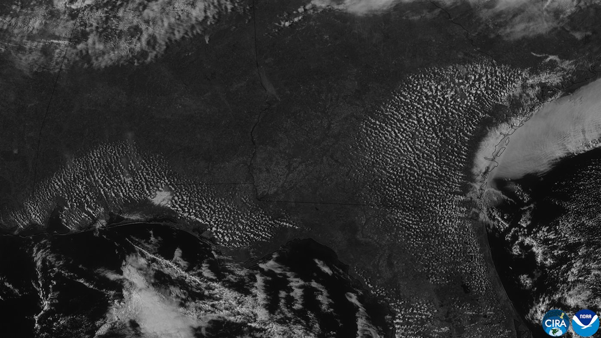

Convección a escala costera
En un día de calor en la playa, a media mañana empieza a soplar un viento fresco desde el agua. De noche, el viento cambia de sentido. Es uno de los fenómenos meteorológicos más fáciles de observar, y es una versión a escala humana de la gran maquinaria de la atmósfera: una celda de convección con el aire caliente subiendo de un lado y el frío entrando por abajo.
La brisa de mar aparece en días calurosos de verano por el calentamiento desigual de la tierra y el agua: durante el día, la superficie de la tierra se calienta más rápido que la del agua [1]. El aire sobre la tierra queda más caliente, se expande, baja su densidad y sube [1][2].
El Servicio Meteorológico de Estados Unidos describe el proceso paso a paso [2]. El aire caliente que sube crea una zona débil de baja presión junto al suelo, llamada baja térmica, porque disminuye la masa de aire en superficie [2]. A unos 1000 a 1500 metros de altura, ese aire se enfría y se acumula, con lo cual allí sube la presión [2].
Esas diferencias de presión, tanto en superficie como en altura, son mayores sobre la tierra que sobre el agua [2]. La atmósfera busca igualarlas, y aparecen dos corrientes: una en altura, de la tierra hacia el mar, y otra en superficie, del mar hacia la tierra [2]. Esta segunda es la brisa de mar.
De dónde sale la fuerza se ve con la ley hidrostática. Si una columna de 1000 metros de aire sobre la tierra está 5 °C más caliente que la del mar, su densidad es casi un 2 % menor, y la diferencia de presión que produce es de unos 200 pascales (un cálculo propio). Es poquísimo, un 0,2 % de la presión atmosférica, pero alcanza para mover el aire.
Abrir la heladera: cuando abrís la heladera en un día de calor, el aire frío se derrama por abajo y el caliente entra por arriba. Sentís el frío en los pies. La brisa de mar es lo mismo a lo grande: el aire fresco y denso del mar se mete por abajo.
Por la noche se invierten los papeles. La tierra se enfría más rápido y el mar queda más templado. Entonces, el aire más caliente sobre el océano es el que flota y sube, y el aire fresco y denso de la tierra sale hacia el mar para reemplazarlo: es la brisa de tierra [1].
Una consecuencia práctica: la brisa de mar puede disparar nubes tierra adentro, porque la corriente en superficie empuja aire hacia un lugar donde ya está subiendo aire caliente (un razonamiento propio). Es una versión local de la convección que se describe en la estabilidad atmosférica.

Una celda de convección como las de laboratorio: la brisa de mar es de la misma familia que la convección de Rayleigh-Bénard o el tiraje de una chimenea: una diferencia de temperatura crea una diferencia de presión que mueve el fluido. Por su tamaño y duración, la rotación de la Tierra tiene un efecto secundario frente a una corriente geostrófica (un comentario propio).
La tierra se calienta y se enfría más rápido que el agua. De día, el aire sube sobre la tierra y el del mar entra por abajo; de noche, pasa al revés. Es una celda de convección de pocos kilómetros, movida por diferencias de presión de un par de hectopascales, y se puede sentir sin ningún instrumento.
Pregunta para la comunidad: ¿Esperarías una brisa de mar más fuerte en un día soleado o en un día nublado? ¿Qué pasa si un viento general ya sopla desde tierra hacia el mar? ¿Y por qué un lago grande podría tener su propia brisa?